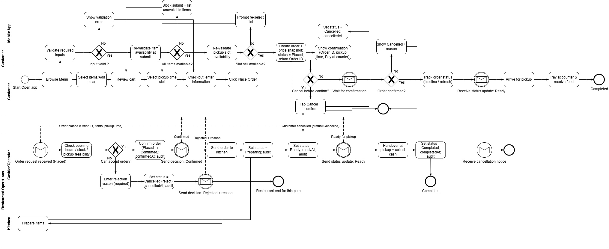

Business Analysis Process
A detailed walkthrough of the end-to-end BA methodology applied to Foodora
Project Timeline & Phases
Discovery & Analysis
Duration: 2 Weeks
- Stakeholder identification and interviews
- Business case development
- Current state process analysis
- User persona creation
Requirements Definition
Duration: 3 Weeks
- Requirements workshops and elicitation
- User story creation and backlog grooming
- MoSCoW prioritization
- Documentation (PRD, use cases)
Solution Design
Duration: 3 Weeks
- Process modeling (BPMN, UML)
- Wireframing and prototyping
- Technical requirements specification
- Data modeling (ERD)
Validation & Handover
Duration: 2 Weeks
- UAT planning and test case development
- Stakeholder reviews and sign-offs
- Traceability matrix creation
- Implementation roadmap
Stakeholder Analysis
Restaurant Owner
Interest: High | Power: High
Key Concerns: ROI, operational efficiency, customer retention
Communication: Weekly steering committee updates
Restaurant Staff
Interest: High | Power: Medium
Key Concerns: Ease of use, error reduction, training
Communication: Bi-weekly demos and feedback sessions
End Customers
Interest: High | Power: Low
Key Concerns: Convenience, speed, order accuracy
Communication: Surveys and usability testing
Development Team
Interest: Medium | Power: High
Key Concerns: Clear requirements, technical feasibility
Communication: Daily stand-ups, sprint planning

Requirements Elicitation Techniques
Stakeholder Interviews
Participants: 8 key stakeholders
Outcome: 45+ business requirements identified
Tools: Interview guides, recording (with consent)
Requirements Workshops
Duration: 4 sessions, 2 hours each
Outcome: Consensus on scope and priorities
Tools: Miro board, user story mapping
Observation & Job Shadowing
Duration: 16 hours over 2 days
Outcome: Identified 12 process inefficiencies
Tools: Process maps, time-motion studies
Document Analysis
Documents: Current order forms, menu, POS reports
Outcome: 8 data entities and relationships identified
Tools: ERD, data dictionary
Process Modeling & Analysis
AS-IS Process (Current State)
Key Pain Points:
- Manual phone order taking (high error rate)
- No real-time menu updates
- Paper-based order tickets
- No customer wait time estimation
TO-BE Process (Future State)
Process model: BPMN (draw.io)
Improvements:
- Digital order flow with validation
- Automatic kitchen ticket printing
- Real-time customer notifications
- Integrated payment and loyalty